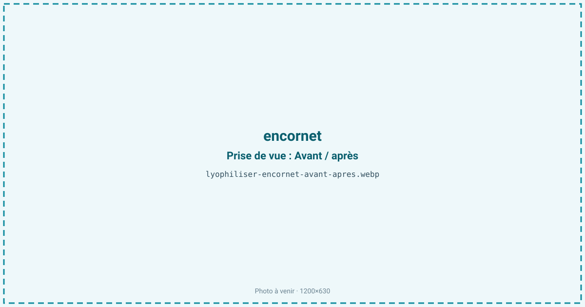
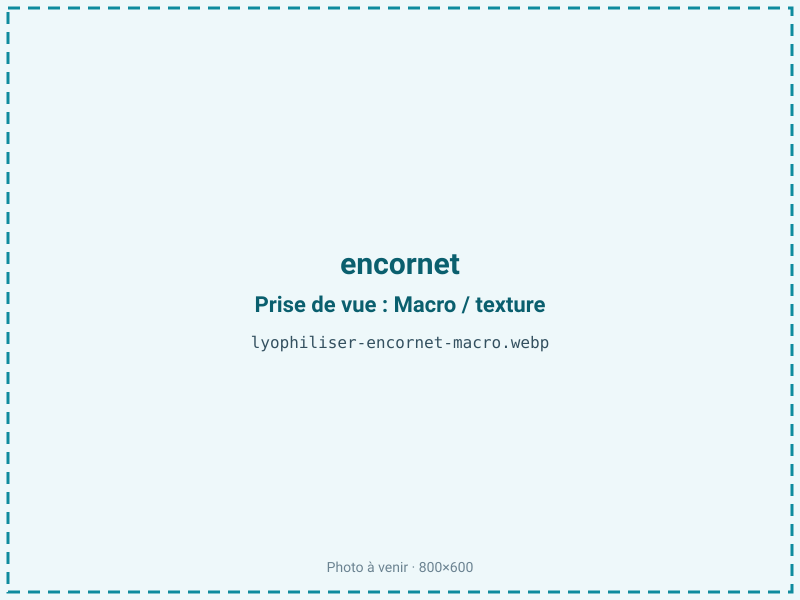
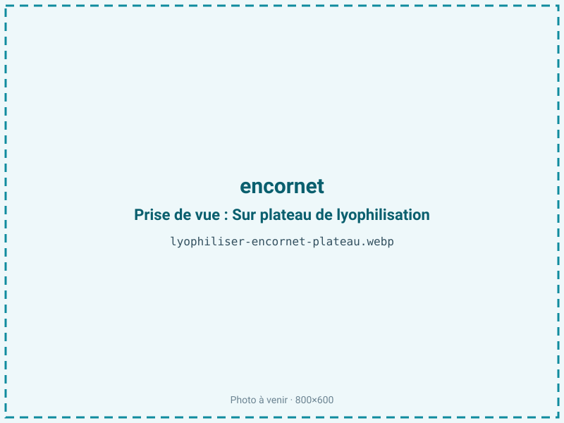
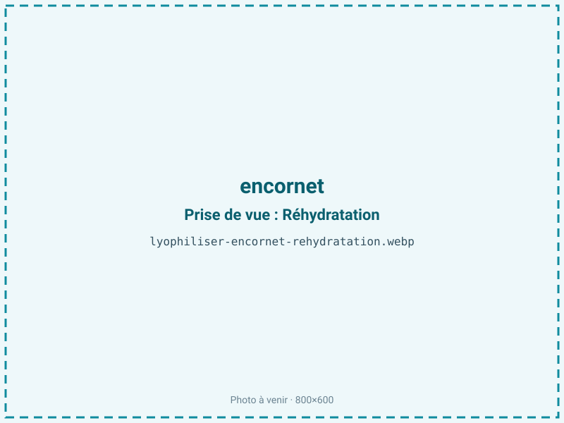

Lyophiliser de l'encornet
L'encornet frais s'altère vite et devient caoutchouteux à la moindre sur-cuisson. La lyophilisation le déshydrate à froid en anneaux ou lanières légers qui se réhydratent en quelques minutes pour la cuisine instantanée, en conservant la chair blanche, tendre et son goût marin sans apport d'huile ni de chaleur agressive.

En bref
Comment encornet se comporte à la lyophilisation
La chair d'encornet est un muscle très structuré : des fibres courtes disposées en couches croisées, gainées d'un collagène qui se rétracte à la chaleur, d'où sa fâcheuse tendance à devenir caoutchouteux dès qu'on le cuit trop. Elle titre environ 80 % d'eau, près de 18 % de protéines et moins de 2 % de lipides, ce qui en fait une matière maigre.
À la congélation, il faut de petits cristaux : une congélation lente déchire les fibres et la chair rend son eau à la réhydratation. À la sublimation, l'épaisseur est le paramètre critique. Un anneau épais ou une chair empilée crée un gradient : le cœur reste humide et, sous vide, la paroi peut s'effondrer (collapse) au lieu de garder sa structure poreuse. Tranché finement, l'encornet sèche vite et régulièrement. Les protéines traversent bien le procédé ; l'absence de graisse limite les problèmes d'oxydation, mais la chair reste sensible à la reprise d'humidité une fois sèche.
Paramètres de cycle
Nettoyer, retirer la plume et la peau, puis trancher en anneaux ou lanières de 4 à 6 mm : l'épaisseur régulière prime sur tout le reste pour éviter le collapse des parties épaisses. Congeler rapidement à −30 à −40 °C. En sublimation primaire, une clayette de 20 à 25 °C convient ; on prolonge le palier secondaire pour homogénéiser la teneur en eau des tranches les plus charnues.
La cible d'aw se situe entre 0,30 et 0,45. L'encornet étant maigre, il n'y a pas de fraction grasse à protéger par une monocouche d'eau : une aw dans cette plage assure déjà une bonne stabilité, et l'on peut viser le bas de la fourchette sans risque de rancissement. Le critère d'arrêt vise une chair rigide, cassante, sans zone translucide qui trahirait un cœur encore humide.
Pièges connus
- Trancher finement pour un séchage homogène.
- Éviter le collapse des anneaux épais.



Variantes & provenance
Le calibre commande la découpe : un gros encornet donne des anneaux larges qu'il faut trancher plus fin qu'un petit chipiron. Selon l'espèce — encornet, calmar de pêche côtière, supions — l'épaisseur du manteau et la fermeté varient, donc la durée de cycle. Une chair prédécoupée en lanières sèche plus vite qu'un tube entier, plus long et hétérogène. La fraîcheur de départ est déterminante : un encornet ayant déjà subi une décongélation rend davantage d'eau et donne une texture plus lâche. La provenance et la saison influent sur la teneur en eau et la fermeté du muscle, et donc sur le rendement au séchage.
Conservation & DLUO
L'encornet est une chair maigre, à moins de 2 % de lipides : son facteur limitant n'est pas l'oxydation mais la reprise d'humidité. Une aw basse lui est donc favorable et ne présente aucun risque de rancissement, contrairement aux produits gras : rien n'empêche de viser le bas de la fourchette 0,30-0,45 pour gagner en stabilité. Une fois sec, il est hygroscopique et se ré-humidifie à l'air, ce qui le ramollit et ouvre la porte au développement microbien : le conditionnement barrière est donc la vraie garantie de durée. Comptez 8 à 12 mois en sachet barrière, davantage sous inertage azote qui exclut aussi l'oxygène résiduel. Un stockage au sec et au frais, à l'abri de la lumière, préserve la couleur blanche et évite tout jaunissement des protéines.
8 à 12 mois en sachet.
Estimez selon votre emballage :
Face aux autres procédés de séchage
Au séchage à l'air, l'encornet durcit et prend la texture coriace du calmar séché de conserverie : le froid ambiant ne suffit pas et la chair reste dense. Au séchage à chaud, la chaleur rétracte le collagène, vire la chair au jaune et la réhydratation ne redonne jamais le moelleux d'origine. Le micro-ondes sous vide, plus doux, convient pour une poudre mais reste inférieur au froid pour une chair entière destinée à regonfler. La lyophilisation est la seule voie qui préserve une structure poreuse capable de se réhydrater en quelques minutes en gardant tendreté et couleur, d'où son intérêt pour les plats marins instantanés.
Marchés & applications
L'encornet lyophilisé alimente les plats marins instantanés (nouilles, paëllas, soupes de poisson à réhydrater), les rations de randonnée et de nautisme, et le snacking protéiné marin. On le trouve aussi en dés ou lanières pour les mélanges de fruits de mer déshydratés et en base pour bouillons. Les clients types sont les fabricants de plats préparés déshydratés, les marques d'outdoor et les industriels de la soupe instantanée qui cherchent une protéine marine légère, stable et rapide à reconstituer.
- Plats marins instantanés
- Snack protéiné
Questions fréquentes — encornet
L'encornet lyophilisé redevient-il tendre ?
Oui, s'il a été congelé vite et tranché fin : la structure poreuse regonfle en quelques minutes. Une congélation lente ou des anneaux trop épais donnent une chair plus caoutchouteuse.
Pourquoi trancher finement ?
Parce qu'un anneau épais garde un cœur humide et risque le collapse sous vide. Une épaisseur régulière de 4 à 6 mm assure un séchage homogène.
Faut-il le cuire avant ?
Non, on peut le traiter cru après nettoyage. Éviter toute sur-cuisson préalable, qui durcit déjà la chair avant même le séchage.
Quel est le ratio ?
Environ 5:1 : il faut à peu près 500 g d'encornet nettoyé pour 100 g de produit sec, la chair étant riche en eau.
Se conserve-t-il longtemps ?
8 à 12 mois en sachet barrière, davantage sous azote. Comme il est maigre, le facteur limitant est la reprise d'humidité, pas l'oxydation.
Encornet, calmar ou seiche, est-ce pareil ?
Le principe est identique, mais l'épaisseur du manteau et la fermeté diffèrent, ce qui change la découpe et la durée de cycle.
Peut-on faire de la poudre d'encornet ?
Oui, en broyant les tranches sèches, pour un assaisonnement marin ou une base de bouillon. Pour une chair à réhydrater, on garde les lanières entières.
Prochaine étape : envoyez-nous 200 g
Vous avez les repères de l'encornet. La suite logique : nous envoyer un échantillon et repartir avec une fiche technique sur votre produit — rendement, aw finale, coût au kilo.
Tester l'encornet — 250 à 500 €Déductible de votre premier lot.